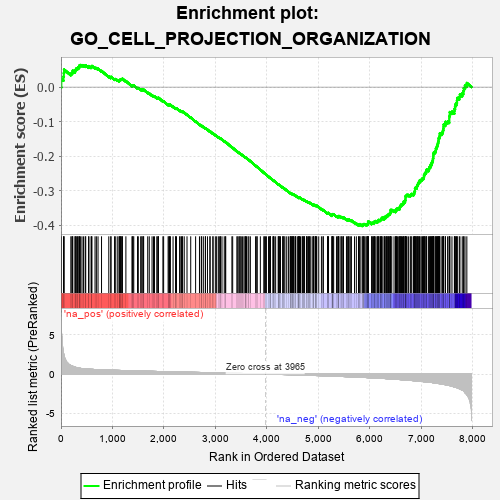
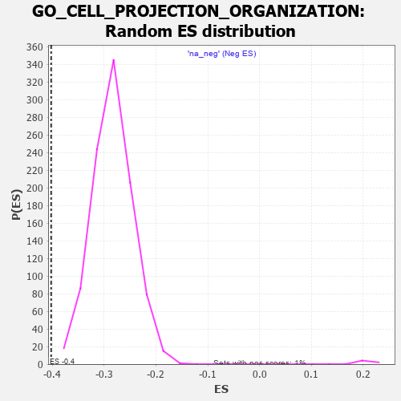

| | | Dataset | 7d |
| Phenotype | NoPhenotypeAvailable |
| Upregulated in class | na_neg |
| GeneSet | GO_CELL_PROJECTION_ORGANIZATION |
| Enrichment Score (ES) | -0.40248406 |
| Normalized Enrichment Score (NES) | -1.4192622 |
| Nominal p-value | 0.0 |
| FDR q-value | 0.29118416 |
| FWER p-Value | 1.0 |
Table: GSEA Results Summary

Fig 1: Enrichment plot: GO_CELL_PROJECTION_ORGANIZATION
Profile of the Running ES Score & Positions of GeneSet Members on the Rank Ordered List
| PROBE | GENE SYMBOL | GENE_TITLE | RANK IN GENE LIST | RANK METRIC SCORE | RUNNING ES | CORE ENRICHMENT | | 1 | SYT2 | | | 8 | 5.577 | 0.0237 | No |
| 2 | TGFB3 | | | 49 | 2.654 | 0.0302 | No |
| 3 | DCLK1 | | | 55 | 2.532 | 0.0408 | No |
| 4 | RAC2 | | | 60 | 2.442 | 0.0511 | No |
| 5 | NCAM2 | | | 191 | 1.085 | 0.0388 | No |
| 6 | RHOU | | | 210 | 1.031 | 0.0410 | No |
| 7 | E2F5 | | | 225 | 0.992 | 0.0435 | No |
| 8 | RHOH | | | 228 | 0.987 | 0.0477 | No |
| 9 | ULK1 | | | 272 | 0.875 | 0.0459 | No |
| 10 | HGF | | | 276 | 0.870 | 0.0493 | No |
| 11 | SHOX2 | | | 288 | 0.842 | 0.0516 | No |
| 12 | FSCN1 | | | 297 | 0.830 | 0.0543 | No |
| 13 | ARX | | | 322 | 0.782 | 0.0546 | No |
| 14 | NUP85 | | | 329 | 0.772 | 0.0572 | No |
| 15 | GSK3A | | | 351 | 0.745 | 0.0577 | No |
| 16 | TAPT1 | | | 354 | 0.743 | 0.0608 | No |
| 17 | LGR6 | | | 360 | 0.738 | 0.0634 | No |
| 18 | PLD1 | | | 381 | 0.716 | 0.0639 | No |
| 19 | OCRL | | | 408 | 0.691 | 0.0636 | No |
| 20 | RRN3 | | | 438 | 0.667 | 0.0627 | No |
| 21 | LRP1 | | | 470 | 0.648 | 0.0615 | No |
| 22 | CDC20 | | | 480 | 0.644 | 0.0631 | No |
| 23 | DOK6 | | | 536 | 0.616 | 0.0586 | No |
| 24 | SRF | | | 542 | 0.615 | 0.0607 | No |
| 25 | DDX56 | | | 584 | 0.600 | 0.0579 | No |
| 26 | RAPH1 | | | 592 | 0.597 | 0.0597 | No |
| 27 | FBXW8 | | | 601 | 0.594 | 0.0612 | No |
| 28 | HES5 | | | 661 | 0.571 | 0.0560 | No |
| 29 | TTC36 | | | 687 | 0.563 | 0.0552 | No |
| 30 | ID1 | | | 719 | 0.555 | 0.0536 | No |
| 31 | RERE | | | 787 | 0.536 | 0.0471 | No |
| 32 | SF3A2 | | | 928 | 0.500 | 0.0308 | No |
| 33 | ZPR1 | | | 967 | 0.491 | 0.0280 | No |
| 34 | DVL3 | | | 971 | 0.490 | 0.0298 | No |
| 35 | AKT1 | | | 1040 | 0.476 | 0.0229 | No |
| 36 | MEF2C | | | 1054 | 0.473 | 0.0233 | No |
| 37 | CDK10 | | | 1092 | 0.465 | 0.0205 | No |
| 38 | SRC | | | 1128 | 0.459 | 0.0179 | No |
| 39 | NCK2 | | | 1131 | 0.458 | 0.0197 | No |
| 40 | EMX1 | | | 1143 | 0.455 | 0.0202 | No |
| 41 | MTSS1 | | | 1149 | 0.454 | 0.0216 | No |
| 42 | GAB1 | | | 1158 | 0.453 | 0.0225 | No |
| 43 | RFX3 | | | 1171 | 0.451 | 0.0230 | No |
| 44 | NEDD1 | | | 1186 | 0.449 | 0.0231 | No |
| 45 | STK36 | | | 1193 | 0.448 | 0.0243 | No |
| 46 | WDR36 | | | 1260 | 0.437 | 0.0175 | No |
| 47 | DRGX | | | 1378 | 0.414 | 0.0039 | No |
| 48 | FKBP4 | | | 1390 | 0.412 | 0.0043 | No |
| 49 | DOCK7 | | | 1398 | 0.410 | 0.0052 | No |
| 50 | CARM1 | | | 1413 | 0.408 | 0.0052 | No |
| 51 | IFRD1 | | | 1486 | 0.392 | -0.0026 | No |
| 52 | E2F4 | | | 1501 | 0.390 | -0.0027 | No |
| 53 | SOS1 | | | 1547 | 0.384 | -0.0070 | No |
| 54 | CNTN4 | | | 1571 | 0.379 | -0.0083 | No |
| 55 | FZD1 | | | 1574 | 0.379 | -0.0069 | No |
| 56 | LCA5L | | | 1598 | 0.374 | -0.0083 | No |
| 57 | RNF6 | | | 1605 | 0.373 | -0.0074 | No |
| 58 | TNPO1 | | | 1684 | 0.359 | -0.0161 | No |
| 59 | TRAK1 | | | 1714 | 0.354 | -0.0184 | No |
| 60 | LLPH | | | 1768 | 0.343 | -0.0239 | No |
| 61 | THOC2 | | | 1796 | 0.338 | -0.0259 | No |
| 62 | FMR1 | | | 1816 | 0.334 | -0.0269 | No |
| 63 | SMAD4 | | | 1860 | 0.326 | -0.0312 | No |
| 64 | NEO1 | | | 1879 | 0.323 | -0.0321 | No |
| 65 | PAK3 | | | 1889 | 0.322 | -0.0319 | No |
| 66 | CUL3 | | | 1893 | 0.321 | -0.0309 | No |
| 67 | BRSK2 | | | 1979 | 0.308 | -0.0407 | No |
| 68 | ROR1 | | | 1993 | 0.306 | -0.0411 | No |
| 69 | LRRC7 | | | 2080 | 0.294 | -0.0511 | No |
| 70 | FOXD1 | | | 2093 | 0.292 | -0.0514 | No |
| 71 | BMP7 | | | 2107 | 0.290 | -0.0518 | No |
| 72 | UBA6 | | | 2114 | 0.289 | -0.0513 | No |
| 73 | ISLR2 | | | 2124 | 0.287 | -0.0513 | No |
| 74 | DDR1 | | | 2176 | 0.280 | -0.0568 | No |
| 75 | MYLIP | | | 2225 | 0.272 | -0.0619 | No |
| 76 | WTIP | | | 2228 | 0.272 | -0.0609 | No |
| 77 | CREB1 | | | 2243 | 0.269 | -0.0616 | No |
| 78 | WASF1 | | | 2303 | 0.259 | -0.0682 | No |
| 79 | UBE4B | | | 2313 | 0.258 | -0.0683 | No |
| 80 | ANO6 | | | 2339 | 0.255 | -0.0704 | No |
| 81 | BCAS3 | | | 2352 | 0.253 | -0.0709 | No |
| 82 | SIN3A | | | 2361 | 0.251 | -0.0708 | No |
| 83 | LHX9 | | | 2393 | 0.247 | -0.0738 | No |
| 84 | KDM1A | | | 2447 | 0.237 | -0.0798 | No |
| 85 | NUMB | | | 2519 | 0.224 | -0.0882 | No |
| 86 | VAV3 | | | 2614 | 0.210 | -0.0997 | No |
| 87 | DSCAM | | | 2689 | 0.200 | -0.1085 | No |
| 88 | SLIT2 | | | 2724 | 0.195 | -0.1122 | No |
| 89 | DCTN3 | | | 2731 | 0.193 | -0.1121 | No |
| 90 | TTLL1 | | | 2764 | 0.189 | -0.1155 | No |
| 91 | FER | | | 2803 | 0.183 | -0.1197 | No |
| 92 | BRK1 | | | 2805 | 0.183 | -0.1190 | No |
| 93 | NR2E1 | | | 2844 | 0.177 | -0.1232 | No |
| 94 | WDR5 | | | 2892 | 0.168 | -0.1287 | No |
| 95 | FGFR2 | | | 2895 | 0.167 | -0.1282 | No |
| 96 | RAB17 | | | 2950 | 0.157 | -0.1346 | No |
| 97 | RAB10 | | | 2952 | 0.157 | -0.1341 | No |
| 98 | UNC5C | | | 2997 | 0.150 | -0.1392 | No |
| 99 | ULK4 | | | 3022 | 0.146 | -0.1417 | No |
| 100 | FEZ1 | | | 3055 | 0.142 | -0.1453 | No |
| 101 | MAP2 | | | 3074 | 0.140 | -0.1471 | No |
| 102 | LHX3 | | | 3092 | 0.138 | -0.1487 | No |
| 103 | RREB1 | | | 3099 | 0.137 | -0.1489 | No |
| 104 | MTMR2 | | | 3126 | 0.133 | -0.1518 | No |
| 105 | PAX6 | | | 3170 | 0.127 | -0.1569 | No |
| 106 | TRIO | | | 3192 | 0.123 | -0.1591 | No |
| 107 | TWF1 | | | 3199 | 0.123 | -0.1593 | No |
| 108 | RAB8A | | | 3319 | 0.102 | -0.1746 | No |
| 109 | RFX4 | | | 3334 | 0.099 | -0.1760 | No |
| 110 | KIF1A | | | 3415 | 0.088 | -0.1862 | No |
| 111 | SARM1 | | | 3432 | 0.086 | -0.1879 | No |
| 112 | PTPRK | | | 3454 | 0.084 | -0.1903 | No |
| 113 | ATG3 | | | 3471 | 0.081 | -0.1921 | No |
| 114 | CDK5 | | | 3480 | 0.080 | -0.1928 | No |
| 115 | FES | | | 3501 | 0.077 | -0.1951 | No |
| 116 | PQBP1 | | | 3526 | 0.072 | -0.1979 | No |
| 117 | FRYL | | | 3553 | 0.066 | -0.2011 | No |
| 118 | EXOC5 | | | 3574 | 0.064 | -0.2034 | No |
| 119 | PARD3 | | | 3584 | 0.063 | -0.2043 | No |
| 120 | MAPK3 | | | 3589 | 0.062 | -0.2046 | No |
| 121 | STK25 | | | 3602 | 0.059 | -0.2059 | No |
| 122 | ACSL4 | | | 3632 | 0.055 | -0.2095 | No |
| 123 | CCKAR | | | 3648 | 0.051 | -0.2112 | No |
| 124 | ABCD1 | | | 3677 | 0.047 | -0.2147 | No |
| 125 | CEP19 | | | 3778 | 0.031 | -0.2278 | No |
| 126 | SPAST | | | 3801 | 0.027 | -0.2306 | No |
| 127 | SFI1 | | | 3810 | 0.026 | -0.2315 | No |
| 128 | NEK2 | | | 3871 | 0.016 | -0.2394 | No |
| 129 | TOP2B | | | 3938 | 0.005 | -0.2481 | No |
| 130 | EXT1 | | | 3954 | 0.001 | -0.2500 | No |
| 131 | IGF1R | | | 3970 | -0.002 | -0.2520 | No |
| 132 | VPS35 | | | 3989 | -0.006 | -0.2544 | No |
| 133 | TOR1A | | | 4030 | -0.013 | -0.2596 | No |
| 134 | ATG5 | | | 4051 | -0.016 | -0.2622 | No |
| 135 | PKN2 | | | 4060 | -0.017 | -0.2631 | No |
| 136 | SFRP2 | | | 4065 | -0.018 | -0.2636 | No |
| 137 | ROBO2 | | | 4066 | -0.018 | -0.2635 | No |
| 138 | MTOR | | | 4114 | -0.025 | -0.2696 | No |
| 139 | ABL1 | | | 4125 | -0.027 | -0.2708 | No |
| 140 | PLCE1 | | | 4127 | -0.028 | -0.2708 | No |
| 141 | CRK | | | 4139 | -0.031 | -0.2721 | No |
| 142 | GFI1 | | | 4168 | -0.037 | -0.2757 | No |
| 143 | UNC5D | | | 4217 | -0.044 | -0.2818 | No |
| 144 | BBIP1 | | | 4226 | -0.046 | -0.2827 | No |
| 145 | ARPC2 | | | 4232 | -0.047 | -0.2831 | No |
| 146 | GPC1 | | | 4238 | -0.048 | -0.2835 | No |
| 147 | GAK | | | 4249 | -0.050 | -0.2846 | No |
| 148 | WDR11 | | | 4262 | -0.052 | -0.2860 | No |
| 149 | STRN | | | 4307 | -0.060 | -0.2915 | No |
| 150 | SYT17 | | | 4310 | -0.061 | -0.2915 | No |
| 151 | BAG4 | | | 4314 | -0.061 | -0.2917 | No |
| 152 | OPA1 | | | 4330 | -0.065 | -0.2933 | No |
| 153 | FIG4 | | | 4348 | -0.068 | -0.2953 | No |
| 154 | ARF4 | | | 4383 | -0.073 | -0.2995 | No |
| 155 | RALA | | | 4416 | -0.079 | -0.3033 | No |
| 156 | KIF3B | | | 4450 | -0.085 | -0.3073 | No |
| 157 | SPAG1 | | | 4453 | -0.085 | -0.3072 | No |
| 158 | ERCC6 | | | 4464 | -0.087 | -0.3081 | No |
| 159 | LRRK2 | | | 4467 | -0.087 | -0.3080 | No |
| 160 | EPS8 | | | 4474 | -0.088 | -0.3084 | No |
| 161 | MEF2A | | | 4499 | -0.095 | -0.3112 | No |
| 162 | NUBP2 | | | 4502 | -0.095 | -0.3110 | No |
| 163 | MOB2 | | | 4504 | -0.095 | -0.3107 | No |
| 164 | ILK | | | 4510 | -0.096 | -0.3109 | No |
| 165 | NPTN | | | 4519 | -0.098 | -0.3116 | No |
| 166 | NTRK2 | | | 4543 | -0.104 | -0.3141 | No |
| 167 | ABI2 | | | 4554 | -0.106 | -0.3150 | No |
| 168 | APC | | | 4558 | -0.107 | -0.3149 | No |
| 169 | SYT4 | | | 4590 | -0.116 | -0.3185 | No |
| 170 | GATA3 | | | 4614 | -0.120 | -0.3210 | No |
| 171 | ATOH1 | | | 4615 | -0.121 | -0.3204 | No |
| 172 | DLG5 | | | 4619 | -0.121 | -0.3203 | No |
| 173 | RAB21 | | | 4620 | -0.122 | -0.3198 | No |
| 174 | SDK1 | | | 4627 | -0.124 | -0.3200 | No |
| 175 | LMX1A | | | 4631 | -0.124 | -0.3199 | No |
| 176 | MYLK | | | 4651 | -0.128 | -0.3218 | No |
| 177 | LIMK1 | | | 4684 | -0.136 | -0.3254 | No |
| 178 | PTK7 | | | 4687 | -0.136 | -0.3251 | No |
| 179 | ARF6 | | | 4704 | -0.140 | -0.3266 | No |
| 180 | LHX2 | | | 4716 | -0.143 | -0.3274 | No |
| 181 | DCX | | | 4721 | -0.143 | -0.3273 | No |
| 182 | WASF3 | | | 4730 | -0.145 | -0.3277 | No |
| 183 | POC1A | | | 4768 | -0.151 | -0.3319 | No |
| 184 | PLCG1 | | | 4770 | -0.151 | -0.3314 | No |
| 185 | RTN4 | | | 4783 | -0.154 | -0.3323 | No |
| 186 | TNIK | | | 4804 | -0.158 | -0.3342 | No |
| 187 | CEP97 | | | 4812 | -0.160 | -0.3344 | No |
| 188 | TAOK3 | | | 4823 | -0.162 | -0.3350 | No |
| 189 | BIN3 | | | 4832 | -0.165 | -0.3353 | No |
| 190 | SGK1 | | | 4852 | -0.168 | -0.3371 | No |
| 191 | SLIT3 | | | 4890 | -0.175 | -0.3412 | No |
| 192 | MARK2 | | | 4899 | -0.177 | -0.3415 | No |
| 193 | IFT43 | | | 4907 | -0.179 | -0.3416 | No |
| 194 | CAPZB | | | 4908 | -0.179 | -0.3408 | No |
| 195 | MNX1 | | | 4939 | -0.186 | -0.3439 | No |
| 196 | FZD4 | | | 4940 | -0.186 | -0.3431 | No |
| 197 | EP300 | | | 4941 | -0.186 | -0.3423 | No |
| 198 | ARAP1 | | | 4963 | -0.191 | -0.3442 | No |
| 199 | SNX2 | | | 4966 | -0.191 | -0.3436 | No |
| 200 | KLF4 | | | 5005 | -0.198 | -0.3478 | No |
| 201 | EFHD1 | | | 5057 | -0.211 | -0.3536 | No |
| 202 | DRD2 | | | 5088 | -0.221 | -0.3565 | No |
| 203 | ITSN1 | | | 5094 | -0.222 | -0.3562 | No |
| 204 | DCTN2 | | | 5175 | -0.243 | -0.3657 | No |
| 205 | HDAC6 | | | 5183 | -0.244 | -0.3655 | No |
| 206 | PARVA | | | 5187 | -0.245 | -0.3649 | No |
| 207 | SMO | | | 5195 | -0.247 | -0.3647 | No |
| 208 | PTEN | | | 5262 | -0.261 | -0.3722 | No |
| 209 | CDK1 | | | 5264 | -0.262 | -0.3712 | No |
| 210 | PICK1 | | | 5265 | -0.263 | -0.3700 | No |
| 211 | RIMS2 | | | 5272 | -0.265 | -0.3697 | No |
| 212 | EPHA4 | | | 5273 | -0.265 | -0.3685 | No |
| 213 | CEP70 | | | 5282 | -0.267 | -0.3683 | No |
| 214 | MAGI2 | | | 5295 | -0.269 | -0.3687 | No |
| 215 | EPHA1 | | | 5349 | -0.285 | -0.3745 | No |
| 216 | CPNE9 | | | 5374 | -0.289 | -0.3763 | No |
| 217 | GRIN1 | | | 5381 | -0.291 | -0.3758 | No |
| 218 | DLG4 | | | 5388 | -0.293 | -0.3753 | No |
| 219 | KIF19 | | | 5392 | -0.294 | -0.3744 | No |
| 220 | PLK4 | | | 5397 | -0.295 | -0.3737 | No |
| 221 | CUX1 | | | 5437 | -0.304 | -0.3775 | No |
| 222 | IST1 | | | 5442 | -0.305 | -0.3766 | No |
| 223 | LRIG2 | | | 5460 | -0.310 | -0.3775 | No |
| 224 | KIF3A | | | 5480 | -0.313 | -0.3786 | No |
| 225 | CEP76 | | | 5485 | -0.315 | -0.3777 | No |
| 226 | FGFR1 | | | 5543 | -0.332 | -0.3838 | No |
| 227 | EHD1 | | | 5560 | -0.336 | -0.3844 | No |
| 228 | NDE1 | | | 5578 | -0.339 | -0.3852 | No |
| 229 | TTC17 | | | 5589 | -0.341 | -0.3850 | No |
| 230 | GFRA1 | | | 5594 | -0.342 | -0.3840 | No |
| 231 | ROR2 | | | 5626 | -0.353 | -0.3865 | No |
| 232 | LRP12 | | | 5639 | -0.358 | -0.3865 | No |
| 233 | TTBK2 | | | 5700 | -0.376 | -0.3928 | No |
| 234 | SLIT1 | | | 5735 | -0.387 | -0.3955 | No |
| 235 | VAMP7 | | | 5777 | -0.399 | -0.3992 | No |
| 236 | TRPC6 | | | 5784 | -0.401 | -0.3982 | No |
| 237 | IFT46 | | | 5802 | -0.406 | -0.3986 | No |
| 238 | BBS4 | | | 5806 | -0.407 | -0.3972 | No |
| 239 | ARL6 | | | 5847 | -0.417 | -0.4006 | Yes |
| 240 | BBS5 | | | 5862 | -0.421 | -0.4006 | Yes |
| 241 | CDK16 | | | 5869 | -0.425 | -0.3995 | Yes |
| 242 | RAB13 | | | 5870 | -0.425 | -0.3976 | Yes |
| 243 | SZT2 | | | 5882 | -0.429 | -0.3972 | Yes |
| 244 | VLDLR | | | 5898 | -0.434 | -0.3972 | Yes |
| 245 | STK11 | | | 5922 | -0.443 | -0.3983 | Yes |
| 246 | VAPA | | | 5939 | -0.449 | -0.3984 | Yes |
| 247 | DCTN1 | | | 5950 | -0.454 | -0.3977 | Yes |
| 248 | ACTN2 | | | 5960 | -0.458 | -0.3969 | Yes |
| 249 | CNTRL | | | 5961 | -0.459 | -0.3948 | Yes |
| 250 | B9D1 | | | 5962 | -0.459 | -0.3928 | Yes |
| 251 | SH2B1 | | | 5963 | -0.459 | -0.3908 | Yes |
| 252 | CENPJ | | | 5968 | -0.460 | -0.3892 | Yes |
| 253 | CKAP5 | | | 6032 | -0.482 | -0.3954 | Yes |
| 254 | RAC1 | | | 6036 | -0.484 | -0.3937 | Yes |
| 255 | EVL | | | 6052 | -0.490 | -0.3935 | Yes |
| 256 | HYLS1 | | | 6067 | -0.495 | -0.3931 | Yes |
| 257 | PLK1 | | | 6082 | -0.500 | -0.3927 | Yes |
| 258 | DBNL | | | 6084 | -0.501 | -0.3907 | Yes |
| 259 | UBB | | | 6090 | -0.503 | -0.3891 | Yes |
| 260 | PIFO | | | 6102 | -0.506 | -0.3883 | Yes |
| 261 | IFT80 | | | 6135 | -0.515 | -0.3902 | Yes |
| 262 | FEZF2 | | | 6150 | -0.519 | -0.3898 | Yes |
| 263 | ROCK1 | | | 6152 | -0.520 | -0.3876 | Yes |
| 264 | PARVB | | | 6168 | -0.528 | -0.3872 | Yes |
| 265 | GRID2 | | | 6170 | -0.528 | -0.3850 | Yes |
| 266 | B9D2 | | | 6196 | -0.535 | -0.3859 | Yes |
| 267 | INSR | | | 6204 | -0.538 | -0.3845 | Yes |
| 268 | LCA5 | | | 6213 | -0.540 | -0.3831 | Yes |
| 269 | TPM1 | | | 6226 | -0.545 | -0.3823 | Yes |
| 270 | EHD4 | | | 6227 | -0.545 | -0.3799 | Yes |
| 271 | CDC42 | | | 6236 | -0.548 | -0.3785 | Yes |
| 272 | FLOT1 | | | 6276 | -0.564 | -0.3811 | Yes |
| 273 | DRC1 | | | 6278 | -0.565 | -0.3788 | Yes |
| 274 | IFT52 | | | 6280 | -0.566 | -0.3764 | Yes |
| 275 | IFT57 | | | 6307 | -0.579 | -0.3772 | Yes |
| 276 | MIEN1 | | | 6316 | -0.582 | -0.3757 | Yes |
| 277 | NCAM1 | | | 6318 | -0.582 | -0.3733 | Yes |
| 278 | IFT88 | | | 6335 | -0.590 | -0.3727 | Yes |
| 279 | IFT27 | | | 6348 | -0.596 | -0.3717 | Yes |
| 280 | GALR2 | | | 6355 | -0.599 | -0.3698 | Yes |
| 281 | ARMC2 | | | 6363 | -0.602 | -0.3681 | Yes |
| 282 | BBS2 | | | 6383 | -0.608 | -0.3679 | Yes |
| 283 | CDKL1 | | | 6388 | -0.610 | -0.3657 | Yes |
| 284 | BBS1 | | | 6397 | -0.616 | -0.3640 | Yes |
| 285 | IFT22 | | | 6400 | -0.617 | -0.3615 | Yes |
| 286 | CDKL3 | | | 6401 | -0.618 | -0.3588 | Yes |
| 287 | NEK1 | | | 6402 | -0.618 | -0.3561 | Yes |
| 288 | PTPRD | | | 6423 | -0.629 | -0.3559 | Yes |
| 289 | HERC1 | | | 6467 | -0.647 | -0.3587 | Yes |
| 290 | LAMA1 | | | 6496 | -0.659 | -0.3595 | Yes |
| 291 | RTTN | | | 6497 | -0.659 | -0.3565 | Yes |
| 292 | TRPV4 | | | 6515 | -0.668 | -0.3558 | Yes |
| 293 | CEP41 | | | 6516 | -0.669 | -0.3528 | Yes |
| 294 | KANK1 | | | 6536 | -0.678 | -0.3523 | Yes |
| 295 | STK24 | | | 6550 | -0.684 | -0.3510 | Yes |
| 296 | ROBO1 | | | 6577 | -0.699 | -0.3513 | Yes |
| 297 | RPGR | | | 6579 | -0.699 | -0.3484 | Yes |
| 298 | ARF1 | | | 6583 | -0.701 | -0.3457 | Yes |
| 299 | ALMS1 | | | 6590 | -0.704 | -0.3433 | Yes |
| 300 | MKS1 | | | 6607 | -0.715 | -0.3423 | Yes |
| 301 | TUB | | | 6611 | -0.718 | -0.3395 | Yes |
| 302 | WWTR1 | | | 6631 | -0.729 | -0.3387 | Yes |
| 303 | PTPRS | | | 6646 | -0.738 | -0.3373 | Yes |
| 304 | USH1G | | | 6654 | -0.740 | -0.3349 | Yes |
| 305 | RAB5A | | | 6655 | -0.741 | -0.3317 | Yes |
| 306 | VASH2 | | | 6680 | -0.752 | -0.3315 | Yes |
| 307 | TTC8 | | | 6682 | -0.753 | -0.3283 | Yes |
| 308 | CERS2 | | | 6689 | -0.756 | -0.3257 | Yes |
| 309 | CATIP | | | 6690 | -0.756 | -0.3223 | Yes |
| 310 | PAK1 | | | 6691 | -0.757 | -0.3190 | Yes |
| 311 | OFD1 | | | 6692 | -0.758 | -0.3156 | Yes |
| 312 | EGFR | | | 6708 | -0.765 | -0.3142 | Yes |
| 313 | GSK3B | | | 6719 | -0.768 | -0.3121 | Yes |
| 314 | KIF27 | | | 6750 | -0.786 | -0.3126 | Yes |
| 315 | C2CD3 | | | 6783 | -0.802 | -0.3132 | Yes |
| 316 | WDR19 | | | 6796 | -0.812 | -0.3112 | Yes |
| 317 | PAQR3 | | | 6812 | -0.819 | -0.3096 | Yes |
| 318 | CEP72 | | | 6846 | -0.839 | -0.3102 | Yes |
| 319 | TTLL3 | | | 6857 | -0.845 | -0.3078 | Yes |
| 320 | AHI1 | | | 6860 | -0.848 | -0.3043 | Yes |
| 321 | NINL | | | 6869 | -0.851 | -0.3015 | Yes |
| 322 | CBY1 | | | 6874 | -0.851 | -0.2983 | Yes |
| 323 | ARMC9 | | | 6875 | -0.852 | -0.2945 | Yes |
| 324 | IQCB1 | | | 6882 | -0.856 | -0.2915 | Yes |
| 325 | PTPRF | | | 6908 | -0.872 | -0.2909 | Yes |
| 326 | ESPN | | | 6911 | -0.873 | -0.2873 | Yes |
| 327 | CSPG4 | | | 6918 | -0.878 | -0.2842 | Yes |
| 328 | LRP8 | | | 6931 | -0.889 | -0.2818 | Yes |
| 329 | SNX3 | | | 6934 | -0.893 | -0.2781 | Yes |
| 330 | FAT4 | | | 6948 | -0.901 | -0.2758 | Yes |
| 331 | DNM1L | | | 6963 | -0.913 | -0.2736 | Yes |
| 332 | TTC29 | | | 6967 | -0.917 | -0.2700 | Yes |
| 333 | NPHP4 | | | 6991 | -0.931 | -0.2689 | Yes |
| 334 | DZIP1 | | | 7009 | -0.940 | -0.2669 | Yes |
| 335 | CEP83 | | | 7020 | -0.950 | -0.2640 | Yes |
| 336 | ARL3 | | | 7041 | -0.963 | -0.2624 | Yes |
| 337 | MYH10 | | | 7048 | -0.966 | -0.2589 | Yes |
| 338 | PIBF1 | | | 7049 | -0.966 | -0.2546 | Yes |
| 339 | ATL1 | | | 7062 | -0.972 | -0.2519 | Yes |
| 340 | CPNE5 | | | 7070 | -0.977 | -0.2485 | Yes |
| 341 | BBS7 | | | 7089 | -0.988 | -0.2464 | Yes |
| 342 | TTC25 | | | 7094 | -0.992 | -0.2426 | Yes |
| 343 | RYK | | | 7102 | -1.000 | -0.2391 | Yes |
| 344 | WHRN | | | 7139 | -1.025 | -0.2393 | Yes |
| 345 | SYT1 | | | 7148 | -1.033 | -0.2357 | Yes |
| 346 | WDR60 | | | 7153 | -1.038 | -0.2316 | Yes |
| 347 | HYDIN | | | 7173 | -1.049 | -0.2295 | Yes |
| 348 | TEKT2 | | | 7177 | -1.053 | -0.2252 | Yes |
| 349 | TSPO | | | 7194 | -1.065 | -0.2226 | Yes |
| 350 | CETN2 | | | 7200 | -1.070 | -0.2185 | Yes |
| 351 | IFT74 | | | 7211 | -1.085 | -0.2150 | Yes |
| 352 | LAMB1 | | | 7220 | -1.094 | -0.2112 | Yes |
| 353 | TCHP | | | 7224 | -1.099 | -0.2067 | Yes |
| 354 | LRGUK | | | 7229 | -1.101 | -0.2024 | Yes |
| 355 | RSPH1 | | | 7231 | -1.101 | -0.1976 | Yes |
| 356 | WDR34 | | | 7233 | -1.103 | -0.1928 | Yes |
| 357 | FBF1 | | | 7241 | -1.111 | -0.1888 | Yes |
| 358 | RSPH9 | | | 7265 | -1.137 | -0.1868 | Yes |
| 359 | IFT81 | | | 7277 | -1.151 | -0.1831 | Yes |
| 360 | CIB1 | | | 7280 | -1.152 | -0.1783 | Yes |
| 361 | KIF17 | | | 7291 | -1.160 | -0.1745 | Yes |
| 362 | MYO7A | | | 7302 | -1.175 | -0.1706 | Yes |
| 363 | ARMC4 | | | 7311 | -1.181 | -0.1664 | Yes |
| 364 | GRN | | | 7319 | -1.194 | -0.1620 | Yes |
| 365 | EFHC2 | | | 7326 | -1.199 | -0.1575 | Yes |
| 366 | CYLD | | | 7333 | -1.206 | -0.1529 | Yes |
| 367 | NGEF | | | 7335 | -1.209 | -0.1477 | Yes |
| 368 | TEKT1 | | | 7349 | -1.220 | -0.1440 | Yes |
| 369 | CEP89 | | | 7354 | -1.223 | -0.1391 | Yes |
| 370 | WDR35 | | | 7357 | -1.225 | -0.1339 | Yes |
| 371 | WDR78 | | | 7396 | -1.261 | -0.1333 | Yes |
| 372 | WDR63 | | | 7411 | -1.276 | -0.1295 | Yes |
| 373 | SPEF2 | | | 7418 | -1.289 | -0.1245 | Yes |
| 374 | SPAG6 | | | 7426 | -1.302 | -0.1197 | Yes |
| 375 | KLF5 | | | 7429 | -1.304 | -0.1142 | Yes |
| 376 | LHX1 | | | 7431 | -1.305 | -0.1085 | Yes |
| 377 | CEP78 | | | 7464 | -1.354 | -0.1067 | Yes |
| 378 | NPY | | | 7465 | -1.356 | -0.1007 | Yes |
| 379 | BBOF1 | | | 7507 | -1.401 | -0.0999 | Yes |
| 380 | TEKT4 | | | 7539 | -1.455 | -0.0975 | Yes |
| 381 | GAS8 | | | 7540 | -1.455 | -0.0910 | Yes |
| 382 | IQCG | | | 7541 | -1.455 | -0.0846 | Yes |
| 383 | LAMA2 | | | 7549 | -1.468 | -0.0790 | Yes |
| 384 | DCC | | | 7550 | -1.470 | -0.0725 | Yes |
| 385 | SAXO1 | | | 7592 | -1.543 | -0.0710 | Yes |
| 386 | CROCC | | | 7639 | -1.628 | -0.0699 | Yes |
| 387 | MNS1 | | | 7642 | -1.633 | -0.0629 | Yes |
| 388 | IQUB | | | 7653 | -1.653 | -0.0568 | Yes |
| 389 | TEKT3 | | | 7658 | -1.657 | -0.0500 | Yes |
| 390 | TRPM2 | | | 7680 | -1.712 | -0.0452 | Yes |
| 391 | ANK3 | | | 7690 | -1.740 | -0.0386 | Yes |
| 392 | ADCY1 | | | 7695 | -1.752 | -0.0314 | Yes |
| 393 | PLS1 | | | 7734 | -1.855 | -0.0282 | Yes |
| 394 | CASP3 | | | 7747 | -1.902 | -0.0213 | Yes |
| 395 | NPHP1 | | | 7791 | -2.041 | -0.0179 | Yes |
| 396 | DCDC2 | | | 7813 | -2.099 | -0.0114 | Yes |
| 397 | PKD2 | | | 7822 | -2.167 | -0.0028 | Yes |
| 398 | DLX5 | | | 7845 | -2.378 | 0.0049 | Yes |
| 399 | FYN | | | 7881 | -2.622 | 0.0119 | Yes |
Table: GSEA details [plain text format]

Fig 2: GO_CELL_PROJECTION_ORGANIZATION: Random ES distribution
Gene set null distribution of ES for GO_CELL_PROJECTION_ORGANIZATION